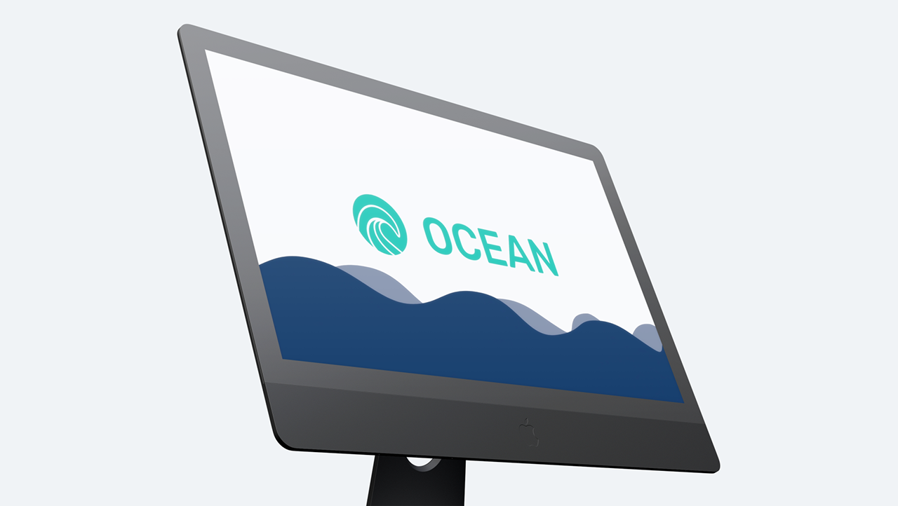

Ocean - Kollaborationstool
Projektübersicht
Dies ist die Detailseite für das Projekt "Ocean - Kollaborationstool". Ocean ist eine innovative Plattform, die darauf abzielt, die Zusammenarbeit in Teams zu verbessern und die Kommunikation zu optimieren. Es bietet Funktionen für Aufgabenmanagement, Dateifreigabe, Echtzeit-Kommunikation und gemeinsame Dokumentenbearbeitung, alles in einer intuitiven Oberfläche.
Das Projekt wurde entwickelt, um die Herausforderungen der verteilten Arbeit zu adressieren und Teams dabei zu unterstützen, effizienter und produktiver zu sein. Der Fokus lag auf Benutzerfreundlichkeit und einer nahtlosen Integration verschiedener Arbeitsabläufe.
Hauptmerkmale
- Integriertes Aufgabenmanagement: Tools zur Planung, Verfolgung und Zuweisung von Aufgaben innerhalb des Teams.
- Sichere Dateifreigabe und Versionskontrolle: Einfaches Teilen von Dateien mit Versionshistorie und Zugriffsberechtigungen.
- Echtzeit-Chat und Videoanrufe: Nahtlose Kommunikation innerhalb der Plattform für schnelle Abstimmung.
- Gemeinsame Dokumentenbearbeitung: Kollaboratives Arbeiten an Dokumenten in Echtzeit.